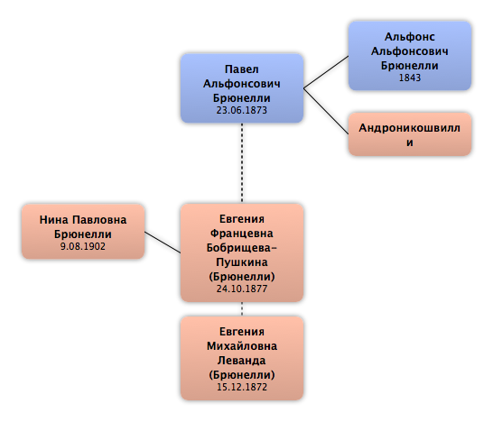

Домой
Домой
 Люди
Люди
 Семьи
Семьи
 Источники
Источники
 Диаграммы
Диаграммы
 Статистика
Статистика
Павел Альфонсович Брюнелли

Контекст

Дополнительные имена
| Тип | Имя |
|---|---|
| Варианты фамилии | Брюнелли Де Дильгер Павел Альфонсович |
Родители
| Отец | Дата рождения | Мать | Дата рождения |
|---|---|---|---|
|
Альфонс Альфонсович Брюнелли
|
1843 |
 Андроникошвилли Андроникошвилли
|
Родители и дети
| Партнёры | Дата рождения | Дети |
|---|---|---|
|
Евгения Францевна Бобрищева-Пушкина
|
24.10.1877 |
Нина Павловна Брюнелли
|
|
Евгения Михайловна Леванда
|
15.12.1872 |
События
| Тип события | Дата | Место | Описание |
|---|---|---|---|
| Рождение | 23.06.1873 | Манглиси, Грузия | |
| Место проживания | 27.04.1904 | Санкт-Петербург, Россия | |
| Эмиграция | 1920 | Париж, Франция | Эмигрировал с семьей в Париж. |
| Документ/Поступок | 16.2.1929 | Париж, Франция | ЛОЖА ГЕРМЕС - посвящен |
| Документ/Поступок | 1935 | Париж, Франция | ЛОЖА АСТРЕЯ - присоединен в 1935. Член ложи до кончины. |
| Профессия | 1942 | редактор "журнала Летописи временных лет" | |
| Смерть | 7.10.1949 | Париж, Франция | Похоронен на кладбище Сент-Женевьев-де-Буа |
Факты
Медиа
Примечание
http://rutracker.org/forum/viewtopic.php?t=3773632
Автор предлагаемой книги - П.А.Брюнелли, полковник, офицер Эриванского и лейб-гвардии Измайловского полков, военный юрист, присяжный поверенный Округа Петербургской судебной палаты. Умер в Париже, похоронен на русском кладбище в Сент-Женевьев де Буа.
Автор предлагаемой книги - П.А.Брюнелли, полковник, офицер Эриванского и лейб-гвардии Измайловского полков, военный юрист, присяжный поверенный Округа Петербургской судебной палаты. Умер в Париже, похоронен на русском кладбище в Сент-Женевьев де Буа.
http://www.runivers.ru/lib/authors/author383819/
Краткая библиографическая справка
Брюнелли Павел Альфонсович
(23 июня 1873, Манглиси, Грузия - 7(8) октября 1949, Париж, похоронен на кладбище Сент-Женевьев-де-Буа).
Служил в лейб-гренадерском Эриванском и лейб-гвардии Измайловском полках.
Окончил юридическую академию.
Владел издательством и книжным складом «Молодой адвокат» в Петербурге (1916-1917).
Участник мировой и Гражданской войн.
В 1920 эмигрировал с семьей в Париж.
Печатался в «Последних новостях».
Один из создателей Республиканско-демократического объединения, товарищ председателя в его правлении.
Член Объединения русских адвокатов в Париже.
Владел вместе с женой Е.М. Брюнелли пансионом для девочек в Вирофлей (под Парижем).
С 1931 издавал и редактировал журнал «Летопись Эриванцев за рубежом» (издание на ротаторе).
Составитель (вместе с В.В. Шидельским) сборников, посвященных истории Эриванского полка (1934-1942).
Автор текста к маршу Эриванского полка.
В 1945 возглавил Кружок по изучению истории лейб-гренадер-ского Эриванского полка.
Член Общества охранения русских культурных ценностей.
Эксперт ложи Гермес (1933-1934), член ложи Друзья Любомудрия.
Краткая библиографическая справка
Брюнелли Павел Альфонсович
(23 июня 1873, Манглиси, Грузия - 7(8) октября 1949, Париж, похоронен на кладбище Сент-Женевьев-де-Буа).
Служил в лейб-гренадерском Эриванском и лейб-гвардии Измайловском полках.
Окончил юридическую академию.
Владел издательством и книжным складом «Молодой адвокат» в Петербурге (1916-1917).
Участник мировой и Гражданской войн.
В 1920 эмигрировал с семьей в Париж.
Печатался в «Последних новостях».
Один из создателей Республиканско-демократического объединения, товарищ председателя в его правлении.
Член Объединения русских адвокатов в Париже.
Владел вместе с женой Е.М. Брюнелли пансионом для девочек в Вирофлей (под Парижем).
С 1931 издавал и редактировал журнал «Летопись Эриванцев за рубежом» (издание на ротаторе).
Составитель (вместе с В.В. Шидельским) сборников, посвященных истории Эриванского полка (1934-1942).
Автор текста к маршу Эриванского полка.
В 1945 возглавил Кружок по изучению истории лейб-гренадер-ского Эриванского полка.
Член Общества охранения русских культурных ценностей.
Эксперт ложи Гермес (1933-1934), член ложи Друзья Любомудрия.
http://www.runivers.ru/lib/book7364/383820/
Книга
Брюнелли Павел Альфонсович
Права Русского Гражданина
Оригинальное название: Права Русскаго Гражданина
Издательство: Тип. М. Волковича
Место издания: СПб.
Год издания: 1913
Количество страниц: 209 с.
Рубрики: Отечественная история, Русская философия
Теги: Право
С переходом России к представительному образу правления с регулярно действующим законодательным установлением, право является могучим регулятором жизни. Оно пронизывает теперь как всю частную и публичную жизнь граждан, так и все государственные и общественные учреждения. Поэтому знанием законов и, прежде всего, тех, которые чаще касаются жизни граждан и способов осуществления своих прав, является настоятельной необходимостью для каждого.
Законодательство никогда не останавливается, оно идет рука об руку с действительностью. Сухие нормы права оживают, соприкоснувшись с действительностью. Это согласование прав и жизни находит свое выражение в регулирующей деятельности Сената. Само собой понятно, что следить за законодательной деятельностью Думы и судебной – Сената для рядового гражданина, занятого своими делами и обязанностями, затруднительно, а знать свои права необходимо. Как же узнать свои права? Как их осуществить, и как поступать в случае их нарушения?
С целью содействия посильному разрешению этих вопросов и составлена эта книга. Общий план книги таков: книга состоит из двух частей. В первой – приведены все законы, касающиеся различных прав гражданина, в ней указывается, что надо делать для осуществления своего права путем указания на саму статью закона. Во второй части книги указывается, как надо сделать, какую написать бумагу, куда ее подать, – словом, как фактически осуществить свое право или добиться восстановления нарушенного права путем обжалования незакономерных действий административных лиц.
Книга
Брюнелли Павел Альфонсович
Права Русского Гражданина
Оригинальное название: Права Русскаго Гражданина
Издательство: Тип. М. Волковича
Место издания: СПб.
Год издания: 1913
Количество страниц: 209 с.
Рубрики: Отечественная история, Русская философия
Теги: Право
С переходом России к представительному образу правления с регулярно действующим законодательным установлением, право является могучим регулятором жизни. Оно пронизывает теперь как всю частную и публичную жизнь граждан, так и все государственные и общественные учреждения. Поэтому знанием законов и, прежде всего, тех, которые чаще касаются жизни граждан и способов осуществления своих прав, является настоятельной необходимостью для каждого.
Законодательство никогда не останавливается, оно идет рука об руку с действительностью. Сухие нормы права оживают, соприкоснувшись с действительностью. Это согласование прав и жизни находит свое выражение в регулирующей деятельности Сената. Само собой понятно, что следить за законодательной деятельностью Думы и судебной – Сената для рядового гражданина, занятого своими делами и обязанностями, затруднительно, а знать свои права необходимо. Как же узнать свои права? Как их осуществить, и как поступать в случае их нарушения?
С целью содействия посильному разрешению этих вопросов и составлена эта книга. Общий план книги таков: книга состоит из двух частей. В первой – приведены все законы, касающиеся различных прав гражданина, в ней указывается, что надо делать для осуществления своего права путем указания на саму статью закона. Во второй части книги указывается, как надо сделать, какую написать бумагу, куда ее подать, – словом, как фактически осуществить свое право или добиться восстановления нарушенного права путем обжалования незакономерных действий административных лиц.
http://www.tez-rus.net/ViewGood24273.html
ID: 24273
Означающее: БРЮНЕЛЛИ Павел Альфонсович
Означаемое:
Язык: Русский
Источник:Российское зарубежье во Франции 1919-2000. Л. Мнухин, М. Авриль, В. Лосская. Москва. Наука; Дом-музей Марины Цветаевой. 2008.
Структурная оппозиция: Биографии
Лексико-семантическое поле: Генеалогия
БРЮНЕЛЛИ Павел Альфонсович
(23 июня 1873, Манглиси, Грузия - 7(8) октября 1949, Париж, похоронен на кладбище Сент-Женевьев-де-Буа)
Адвокат, полковник, издатель, масон.
Муж Е.Ф. Брюнелли (в первом браке), Е.М. Брюнелли (во втором), отец Н.П. Брюнелли, брат В.А. и Е.А. Брюнелли. Служил в лейб-гренадерском Эриванском и лейб-гвардии Измайловском полках. Окончил юридическую академию. Владел издательством и книжным складом «Молодой адвокат» в Петербурге (1916-1917). Участник мировой и Гражданской войн.
В 1920 эмигрировал с семьей в Париж. Печатался в «Последних новостях». Один из создателей Республиканско-демократического объединения, товарищ председателя в его правлении. Член Объединения русских адвокатов в Париже. Владел вместе с женой Е.М. Брюнелли пансионом для девочек в Вирофлей (под Парижем). С 1931 издавал и редактировал журнал «Летопись Эриванцев за рубежом» (издание на ротаторе). Составитель (вместе с В.В. Шидельским) сборников, посвященных истории Эриванского полка (1934-1942). Автор текста к маршу Эриванского полка. В 1945 возглавил Кружок по изучению истории лейб-гренадер-ского Эриванского полка. Член Общества охранения русских культурных ценностей. Эксперт ложи Гермес (1933-1934), член ложи Друзья Любомудрия.
ID: 24273
Означающее: БРЮНЕЛЛИ Павел Альфонсович
Означаемое:
Язык: Русский
Источник:Российское зарубежье во Франции 1919-2000. Л. Мнухин, М. Авриль, В. Лосская. Москва. Наука; Дом-музей Марины Цветаевой. 2008.
Структурная оппозиция: Биографии
Лексико-семантическое поле: Генеалогия
БРЮНЕЛЛИ Павел Альфонсович
(23 июня 1873, Манглиси, Грузия - 7(8) октября 1949, Париж, похоронен на кладбище Сент-Женевьев-де-Буа)
Адвокат, полковник, издатель, масон.
Муж Е.Ф. Брюнелли (в первом браке), Е.М. Брюнелли (во втором), отец Н.П. Брюнелли, брат В.А. и Е.А. Брюнелли. Служил в лейб-гренадерском Эриванском и лейб-гвардии Измайловском полках. Окончил юридическую академию. Владел издательством и книжным складом «Молодой адвокат» в Петербурге (1916-1917). Участник мировой и Гражданской войн.
В 1920 эмигрировал с семьей в Париж. Печатался в «Последних новостях». Один из создателей Республиканско-демократического объединения, товарищ председателя в его правлении. Член Объединения русских адвокатов в Париже. Владел вместе с женой Е.М. Брюнелли пансионом для девочек в Вирофлей (под Парижем). С 1931 издавал и редактировал журнал «Летопись Эриванцев за рубежом» (издание на ротаторе). Составитель (вместе с В.В. Шидельским) сборников, посвященных истории Эриванского полка (1934-1942). Автор текста к маршу Эриванского полка. В 1945 возглавил Кружок по изучению истории лейб-гренадер-ского Эриванского полка. Член Общества охранения русских культурных ценностей. Эксперт ложи Гермес (1933-1934), член ложи Друзья Любомудрия.
http://fgurgia.ru/showObject.do?object=150340037&viewMode=B_10341&link=1
БРЮНЕЛЛИ ПАВЕЛ АЛЬФОНСОВИЧ
Биографические сведения
(1873-1949), слушатель Александровской военно-юридической академии, полковник л.гв. Измайловского полка, присяжный поверенный, в эмиграции во Франции, 11.2.1900
БРЮНЕЛЛИ ПАВЕЛ АЛЬФОНСОВИЧ
Биографические сведения
(1873-1949), слушатель Александровской военно-юридической академии, полковник л.гв. Измайловского полка, присяжный поверенный, в эмиграции во Франции, 11.2.1900
Источники
Родство
| Имя | Степень родства | Дата рождения | Место рождения | Дата смерти | Место смерти |
|---|---|---|---|---|---|
| Партнёров | |||||
| Партнёр или жена | 15.12.1872 | Санкт-Петербург, Россия | 21.10.1971 | Париж, Франция | |
| Партнёр или жена | 24.10.1877 | Санкт-Петербург, Россия | 02.1949 | Париж, Франция | |
| Братья и сёстры | |||||
| Брат | 1868 | ||||
| Сестра | 17.04.1879 | Новороссийск, Россия | 20.09.1962 | Париж, Франция | |
| Сестра | 1887 | 22.02.1927 | Париж, Франция | ||
| Дети | |||||
| Дочь | 9.08.1902 | Санкт-Петербург, Россия | 17.09.1923 | Ницца, Франция | |
| Родителей | |||||
| Мать | |||||
| Отец | 1843 | ||||
| Племянники и племянницы | |||||
| Племянник | 1893 | 10.06.1938 | Ростовская область, СССР | ||
| Внучатые племянники и внучатые племянницы | |||||
| Внучатая племянница | 1910 | ||||
| Внучатый племянник | 4.03.1913 | 13.08.1999 | Ленинград, СССР | ||
| Внучатая племянница | 1914 | ||||
| Внучатая племянница | 1918 | 2000 | |||
| Внучатая племянница | 01.02.1926 | Ленинград, СССР | 06.10.1997 | Санкт-Петербург, Россия | |
| Правнучатые племянники и правнучатые племянницы | |||||
| Правнучатый племянник | |||||
| Правнучатый племянник | 1937 | ||||
| Правнучатая племянница | 1939 | ||||
| Правнучатая племянница | 1950 | ||||
| Правнучатая племянница | 1956 | ||||
| Правнучатая племянница | 19.03.1963 | Ленинград, СССР | |||
| Правнучатый племянник | 22.02.1965 | Ленинград, СССР | |||
| Пра-правнучатые племянники и пра-правнучатые племянницы | |||||
| Пра-правнучатый племянник | |||||
| Пра-правнучатая племянница | |||||
| Пра-правнучатый племянник | 1974 | ||||
| Пра-правнучатый племянник | 1980 | ||||
| Пра-правнучатый племянник | 01.09.1988 | Ленинград, СССР | |||
| Пра-правнучатый племянник | 19.11.1991 | Санкт-Петербург, Россия | |||
| Пра-правнучатый племянник | 15.07.1995 | Санкт-Петербург, Россия | |||